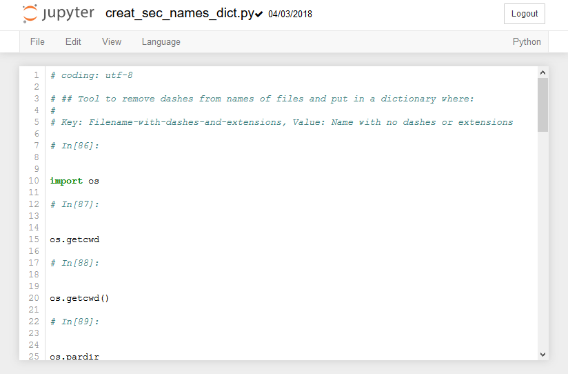

The Jupyter Notebook Interface¶
When a new Jupyter notebook opens, you will see the Jupyter Notebook interface. Across the top of the notebook will be the Jupyter icon and the notebook name. Click on the notebook name field and change the name of the notebook. Note that the file extension .ipynb is not printed in the file name field, even though the .ipynb extension is part of the file name.
Code Cells¶
In code cells, you can write Python Code, then execute the code and see the resulting output. An example of a code cell is shown below. Note that the code cell has the text In[ ] to the left of it. In the top menu, the cell type drop down will read [Code] when you are editing a code cell.
To run the code in a code cell push the [Run] button or type [Shift]+[Enter]. Hitting [Enter] when inside a code cell will only bring the cursor down to a new line.
Markdown Cells¶
In markdown cells, you can type in markdown which will be richly formatted when “run.” Markdown cells are used for documentation and explaining code. An example of a markdown cell is shown below. The text in a markdown cell does not execute the same way code in code cells execute. In the top menu, the cell type drop down will read [Markdown] when you are editing a markdown cell. Markdown formatting includes a few special characters. To “run” a markdown cell push the [Run] button or type [Shift]+[Enter]. Hitting [Enter] when inside a markdown cell will only bring the cursor down to a new line.
Markdown syntax includes formatting for headings, bold, italics, code blocks and tables.
Bold and Itallic Text¶
Bold text and italic text can be written in markdown using the double asterisk ** and the underscore _
Surround bold text with double asterisks **. Make sure two asterists is used (one asterix will produce itallics).
**bold text**
Will result in:
Bold Text
Surround italic text with the underscore _ character:
_italic text_
will result in
italic text
Bold and italics can be used by surrounding text with **_ and _**.
**_bold and italic_**
will result in
bold and italic
Code Blocks¶
Inline code blocks need to be surrounded by a `, the character to the left of the number 1and above tab on most keyboards.
``` Inline code blocks ```
Separated code blocks need to have a line of three left quote characters by itself, then the code then a line of three left quote character by itself.
```
Seperated code blocks
```
Seperated code blocks
Tables¶
Tables can be formated in markdown cells with the pipe character |. The table header row needs to have | where you want vertical lines. The second line of a table needs the structure | --- | --- |. All subsequent rows of the table need pipes between cells.
| Col 1 Header | Col 2 Header |
| --- | --- |
| row 1 col 1 | row 1 col 2 |
| row 2 col 1 | row 2 col 2 |
will result in:
Col 1 Header |
Col 2 Header |
|---|---|
row 1 col 1 |
row 1 col 2 |
row 2 col 1 |
row 2 col 2 |
Saving Jupyter Notebooks in Other Formats¶
Jupyter notebooks can be saved in other formats besides the native .ipynb format. These formats can be accessed on the [File] –> [Download As] menu.

The available file types are:
Notebook (.ipynb) - The native Jupyter notebook format
Python (.py) - The native Python code file format.
HTML (.html) - An html web page
Markdown (.md) - Markdown format
reST (.rst) - Restructured text format
LaTeX (.tex) - LaTeX format
PDF via LaTeX - a pdf exported from LeTeX, requires a converter
When a Notebook is saved as a .py file, any text in markdown cells is converted to comments, and any code cells are kept as Python code. The .py file after a notebook is Downloaded as a Python(.py) looks like:
